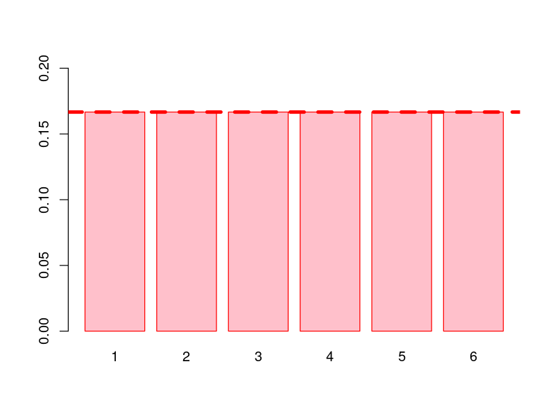
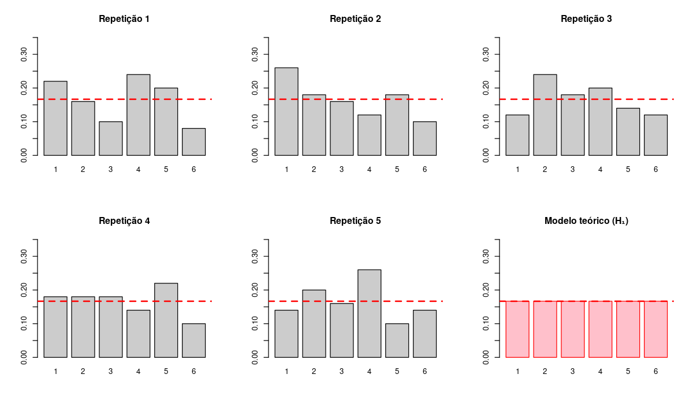

Acesse e responda o formulário abaixo.
Ou acesse diretamente:
https://forms.gle/XxyHkJ5rgEfuoJC18
🎲 Agora acesse e responda o segundo formulário.
Ou acesse diretamente:
https://forms.gle/pmyYVS8fXBk9E7eh9
📊 Monitorar ambientes marichos e costeiros (praias, recifes, estuários, ...)
🐟 Estimar estado e trajetória de populações e comunidades marinhas
🌊 Modelar correntes oceânicas e processos físicos
🔬 Analisar dados ambientais e oceanográficos
🎯 Definir e avaliar estratégias de monitoramento e gestão ambiental
Tudo depende de confrontar dados com modelos
✅ Formulário 1: Dado mental (simulado mentalmente)
✅ Formulário 2: Dado físico (lançado de verdade)
✅ Experimento: O lançamento do dado físico serve de controle para o dado mental
✅ Os dados estão coletados, mas ninguém viu os resultados ainda!
Se juntarmos os resultados de toda a turma em um gráfico de frequência,
como vocês esperam que o gráfico se pareça?
💭
Se o dado for justo, esperamos que cada face apareça aproximadamente 1/6 das vezes

A expressão abaixo descreve um modelo probabilístico:
$$M_0: P(X = k) = \frac{1}{6} \text{ para todo } k$$
O modelo é uma representação matemática do que esperamos observar
se nossa hipótese do Dado
Justo for verdadeira
Mesmo com um dado perfeitamente justo, cada repetição do experimento produzirá resultados um pouco diferentes

O padrão resultante vai produzir uma distribuição aproximadamente uniforme, parecida com a de um dado justo?
💭
Quais números tenderiam a ser escolhidos com mais ou menos frequência?
H₁: As pessoas preferem o centro e evitam os extremos
| Face | 1 | 2 | 3 | 4 | 5 | 6 |
|---|---|---|---|---|---|---|
| p | 1/14 | 2/14 | 4/14 | 4/14 | 2/14 | 1/14 |
Todas as faces igualmente prováveis
$$M_0: \quad p_k = \frac{1}{6}$$
Centro mais provável, extremos raros
$$M_1: \quad p_3 = p_4 = \frac{4}{14}$$
O que temos agora?
# Carregando dados do googlesheets
mental <- c(...)
fisico <- c(...)
n_mental <- length(mental)
n_fisico <- length(fisico)
# Frequências por face
freq_mental <- table(factor(mental, levels = 1:6))
freq_fisico <- table(factor(fisico, levels = 1:6))
# Proporções
prop_mental <- freq_mental / n_mental
prop_fisico <- freq_fisico / n_fisico
Temos duas hipóteses,
cada uma descrita por um
modelo probabilístico diferente
Como quantificar a hipótese mais compatível com os dados?
Se temos um modelo que atribui probabilidades a cada resultado possível de um experimento, podemos medir quão compatível o modelos é com os dados que de fato temos em mãos.
A verossimilhança é a função que associa os dados a este modelo de probabilidade.
Olha para frente: dado um modelo, qual a chance de observar um resultado?
$$P(\text{dados} \mid H)$$
O modelo é fixo, o resultado varia
Olha para trás: dado que observamos um resultado, quão plausível é o modelo?
$$\mathcal{L}(H \mid \text{dados})$$
Os dados são fixos, o modelo varia
O valor numérico de $\mathcal{L}(H \mid \text{dados})$ é calculado como $P(\text{dados} \mid H)$. A diferença está na interpretação: a verossimilhança mede a plausibilidade de hipóteses, não de resultados.
$$\mathcal{L}(H \mid \text{dados}) = \prod_{k=1}^{6} p_k^{n_k}$$
Onde $p_k$ é a probabilidade que o modelo atribui à face $k$,
e $n_k$ é quantas vezes essa face apareceu
Em log (mais prático para computação):
$$\log \mathcal{L}(H \mid \text{dados}) = \sum_{k=1}^{6} n_k \cdot \log(p_k)$$
# Probabilidades sob cada modelo
p_h0 <- rep(1/6, 6)
p_h1 <- c(1, 2, 4, 4, 2, 1) / 14
# Log-verossimilhança para dado físico
loglik_H0_fisico <- sum(freq_fisico * log(p_h0))
loglik_H1_fisico <- sum(freq_fisico * log(p_h1))
# Log-verossimilhança para dado mental
loglik_H0_mental <- sum(freq_mental * log(p_h0))
loglik_H1_mental <- sum(freq_mental * log(p_h1))
Mesma estrutura para todos os modelos!
Como todas as probabilidades são iguais ($1/6$), o $\log(p_k)$ é o mesmo para toda face:
$$\log \mathcal{L}(H_0 \mid \text{dados}) = n \cdot \log\!\left(\frac{1}{6}\right)$$
A verossimilhança de H₀ NÃO depende de quais faces saíram, depende apenas de quantas observações existem.
Uma turma toda dizendo "3" é tão verossímil quanto uma turma perfeitamente equilibrada
H₀ é incapaz de discriminar a origem dos dados
E é justamente por isso que precisamos de múltiplas hipóteses
Na ciência, nunca avaliamos uma hipótese isoladamente.
Sempre comparamos:
este modelo versus aquele modelo
esta explicação versus aquela explicação
etc...
$$\log \frac{\mathcal{L}(H_1)}{\mathcal{L}(H_0)} = \sum_{k=1}^{6} n_k \cdot \log\!\left(\frac{p_k^{(H_1)}}{1/6}\right)$$
Para cada face, medimos o quanto H₁ prevê a mais ou a menos que H₀, e pesamos pelo número de vezes que a face apareceu
$$\Lambda = \frac{\mathcal{L}(H_1 \mid \text{dados})}{\mathcal{L}(H_0 \mid \text{dados})}$$
| $\Lambda > 1$ ($\log\Lambda > 0$) | dados mais compatíveis com $H_1$ do que com $H_0$ |
| $\Lambda < 1$ ($\log\Lambda < 0$) | dados mais compatíveis com $H_0$ |
| $\Lambda = 1$ | os dois modelos explicam os dados igualmente bem |
| $\Lambda = 10$ | $H_1$ é 10 vezes mais compatível com os dados do que $H_0$ |
Por hora, vamos nos focar na comparação entre H1 e H0
razao_mental <- exp(loglik_H1_mental - loglik_H0_mental)
razao_fisico <- exp(loglik_H1_fisico - loglik_H0_fisico)
cat("Dado mental — H₁/H₀:", round(razao_mental, 1), "\n")
cat("Dado físico — H₁/H₀:", round(razao_fisico, 1), "\n")
Uma razão $\Lambda = 5$, por exemplo, é "grande" ou "pequena"? Precisamos de um ponto de referência: o que esperamos obter apenas pelo acaso quando H₀ é verdadeiro?
# Simular 1000 experimentos sob H0 e calcular log(Λ) em cada um
n_obs <- n_mental # mesmo tamanho da amostra real
n_sim <- 1000
razoes_sim <- replicate(n_sim, {
amostra <- sample(1:6, size = n_obs, replace = TRUE, prob = p_h0)
freq_sim <- table(factor(amostra, levels = 1:6))
ll_H0 <- sum(freq_sim * log(p_h0))
ll_H1 <- sum(freq_sim * log(p_h1))
ll_H1 - ll_H0 # log da razão de verossimilhanças
})
# Onde cai o valor observado?
cat("Percentil 95% simulado:", round(quantile(razoes_sim, 0.95), 2), "\n")
cat("log(Λ) observado (dado mental):", round(loglik_H1_mental - loglik_H0_mental, 2), "\n")
n_sim <- 1000
sim_H1 <- replicate(n_sim, {
amostra <- sample(1:6, n_mental,
replace = TRUE, prob = p_h1)
table(factor(amostra, levels = 1:6)) / n_mental
})
# Mostrar 5 simulações + dados observados
par(mfrow = c(2, 3))
for (i in 1:5) {
barplot(sim_H1[, i],
main = paste("Simulação H₁ -", i),
ylim = c(0, 0.35), col = "salmon")
abline(h = 1/6, lty = 2, col = "red")
}
barplot(prop_mental, main = "Observado",
ylim = c(0, 0.35), col = "steelblue")
Se:
$$\log \frac{\mathcal{L}(H_1)}{\mathcal{L}(H_0)} > 0$$
E as simulações sob H₁ se parecem com os dados da turma!
Não apenas mostramos que H₁ é mais verossímil que H₀, mas mostramos que H₁ também é capaz de reproduzir melhor o padrão observado
Antes de vermos os dados, qual era nosso grau de confiança de que o dado mental seguiria H₀?
O grau de confiança que temos em cada hipótese antes de olhar a evidência é chamado de distribuição a priori — ela expressa como distribuímos nossa crença entre as hipóteses disponíveis.
A priori só faz sentido, portanto, quando temos duas ou mais hipóteses para comparar.
# Priori da turma (valores reais da votação)
n_turma <- 50
votos_H0 <- 32 # Substituir pelo valor real
votos_H1 <- 18 # Substituir pelo valor real
prior <- c(H0 = votos_H0 / n_turma,
H1 = votos_H1 / n_turma)
prior
$$P(H) \times \mathcal{L}(H \mid \text{dados}) \propto P(H \mid \text{dados})$$
Priori $\rightarrow P(H)$: Crença inicial
Verossimilhança $\rightarrow \mathcal{L}(H \mid \text{dados})$: Força da evidência
Posteriori $\rightarrow P(H \mid \text{dados})$: Crença atualizada
# Posteriori para dado mental
lik_mental <- c(H0 = exp(loglik_H0_mental),
H1 = exp(loglik_H1_mental))
post_mental <- prior * lik_mental
post_mental <- post_mental / sum(post_mental)
# Posteriori para dado físico
lik_fisico <- c(H0 = exp(loglik_H0_fisico),
H1 = exp(loglik_H1_fisico))
post_fisico <- prior * lik_fisico
post_fisico <- post_fisico / sum(post_fisico)
par(mfrow = c(1, 3))
barplot(prior, col = c("grey70", "salmon"),
main = "Priori (votação)",
ylim = c(0, 1))
barplot(post_fisico, col = c("grey70", "salmon"),
main = "Posteriori: Dado Físico",
ylim = c(0, 1))
barplot(post_mental, col = c("grey70", "salmon"),
main = "Posteriori: Dado Mental",
ylim = c(0, 1))
Crença Inicial × Evidência = Crença Atualizada
• A priori distribui a crença entre as hipóteses antes dos dados
• A verossimilhança redistribui à luz da evidência observada
• A posteriori atualiza o conhecimento
A posteriori de hoje é a priori de amanhã
| Tópicos da aula | O que fizemos | Conceito formal |
|---|---|---|
| 1. Experimentação | Geramos dados sob duas condições experimentais específicas (tratamentos) | Desenho experimental e grupo controle |
| 2. Expectativas | Formulamos a previsão antes de ver os resultados | Definição das hipóteses H₀ e H₁. Raciocínio hipotético-dedutivo |
| 3. Das hipóteses aos modelos | Traduzimos as intuições em dois modelos probabilísticos concorrentes | Aleatoriedade |
| 4. Conhecimento prévio | Quantificamos a crença coletiva em H₀ e H₁ antes de avaliar os dados | Priori |
| 5. Simulação a priori | Geramos dados artificiais para entender a variabilidade esperada em H₀ | Simulação de Monte Carlo |
| 6. Análise exploratória | Confrontamos expectativa com observação | Análise exploratória guiada por hipótese |
| 7. Razão H₁/H₀ | Quantificamos qual modelo é mais compatível com cada conjunto de dados | Razão de verossimilhança e seleção de modelos |
| 8. Simulação a posteriori | Verificamos se o modelo mais verossímil reproduz o padrão observado | Validação do modelo via simulação |
| 9. Priori + dados | Atualizamos a crença da turma com a evidência | Inferência Bayesiana |